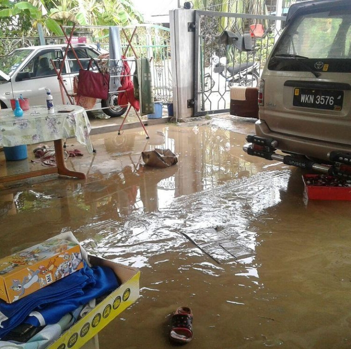
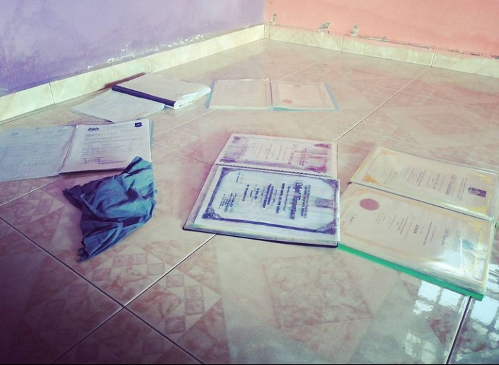

This entry will telling you about my life experience up till today. Before begin the experience of mine, let's understand what experience is. Experience is a event that happen during our lives. It can be good even a bad one but every single people in this world has theirs and no one lives on this earth that do not have experience. Experience is an important elements. This is because experience taught us to be a better person or to give lesson for better living.
My experience that I wanna share soon is a bit painful experience because most of my years filled up with more sadness and less happiness. I'll begin with an experience which emerged around November 2016. My whole family experienced flash floods at our home which on that day we're having such a heavy rain and the floods water began to rise very quickly around 4 a.m and enter my home at knees level. At the same time, the floods successfully drown our important document including my parent's marriage certificate and school certificate of my siblings including me. It's such a painful day. On the morning, my both parents had to apply for leave a week for cleaning up our house from the front gate until our backyard. The first day was a tough day because we need to used more water supply with the usage of water jet to melt up the thick mud for cleaning purposes.
We only can save few of important documents including my dad's paper work because my dad work as an officer so he stored most of the files at home for ease his way to continue the tasks and to make double check on the report written. Unfortunately, 40% of stored documents were damaged like my school's certificate including my PT3's examination certificate and my sibling's document as well. The documents are not totally damaged because the usage of high quality paper and ink to produce out the certificate and we still can save them even thought some of text printed were gone. I felt sad and dissapointed when I saw my PT3's examination certificate wasn't look proper as the first day I received it on 2015. After I brought out all the certificates, I need to dry them as soon as possible because I do not want the documents become worsen. That's my painful experience. My whole family had to face the flash floods patiently and accept the result and damage that cause by the floods.